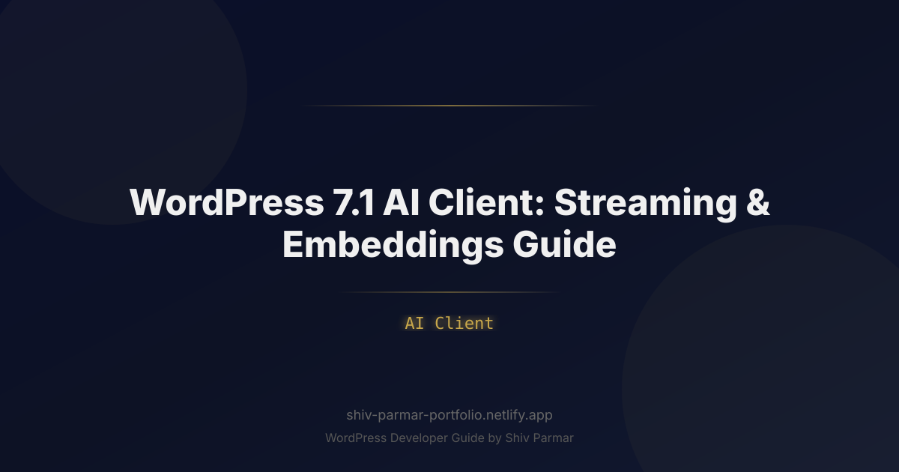

WordPress 7.1 AI Client: Streaming & Embeddings | Shiv Parmar
Table of Contents
The landscape of enterprise web development has shifted dramatically toward intelligence-driven user experiences. For years, integrating large language models into WordPress meant wrestling with fragmented third-party plugins, fragile API wrappers, and unresponsive user interfaces held hostage by 15-second HTTP request timeouts. With the release of WordPress 7.1, the platform dramatically modernizes its architectural approach to artificial intelligence by introducing the native AI Client abstraction layer.
This standardized interface transforms how WordPress handles artificial intelligence at scale. Rather than treating artificial intelligence as an external utility patched in through ad-hoc cURL requests, WordPress 7.1 elevates AI capabilities to first-class citizens alongside the REST API, Metadata API, and Block Editor. Developers can now tap into standardized response streaming and high-dimensional vector embeddings straight out of core, paving the way for hyper-responsive editorial interfaces, predictive workflows, and semantic search systems that render the traditional SQL LIKE '%keyword%' query obsolete.
Whether you are architecting a high-traffic news portal seeking instant semantic editorial suggestions, building an enterprise knowledge base powered by Retrieval-Augmented Generation (RAG), or modernizing WooCommerce catalog discovery, mastering the WordPress 7.1 AI Client is an essential competitive advantage. This guide provides an end-to-end technical walkthrough of leveraging streaming responses and embeddings to build production-grade WordPress AI architectures.
What is the WordPress 7.1 AI Client?
The WordPress 7.1 AI Client is a unified, provider-agnostic subsystem within WordPress core that standardizes communication between WordPress environments and generative AI backends (such as OpenAI, Anthropic, Google Gemini, Mistral, or self-hosted Ollama and vLLM clusters). Built heavily around design patterns established by PSR-18 HTTP clients and asynchronous reactive streams, the AI Client abstracts vendor-specific SDKs into a cohesive set of PHP interfaces and JavaScript controllers.
Historically, building AI features across themes and plugins introduced severe vendor lock-in. A plugin written for OpenAI could not effortlessly switch to an on-premise Llama 3 model without refactoring prompt wrappers, token counters, and parsing logic. The WordPress 7.1 AI Client solves this by decoupling the interface from the transport driver. The client provides three primary programmatic pillars:
- Inference & Chat Services: A standardized mechanism to dispatch single or multi-turn conversational payloads across diverse models.
- Streaming Engine: Native support for Server-Sent Events (SSE) and HTTP/2 chunked transfer encoding, piping partial model tokens directly from the upstream provider through the WordPress REST API to the client browser without intermediate PHP buffer blocking.
- Vector Embeddings API: High-throughput methods for converting natural language content into numerical vector arrays (tensors), complete with native schema hooks for persistent vector storage and similarity searches.
| Feature | Legacy WordPress AI Plugins | WordPress 7.1 AI Client |
|---|---|---|
| Streaming Support | Requires custom Node/Python microservices or clunky WebSockets. | Native Server-Sent Events (SSE) via WP_AI_Stream_Response. |
| Embeddings Generation | Raw API calls; developers hand-roll vector parsing and storage. | Standardized wp_ai_embed() pipeline with batch processing. |
| Provider Architecture | Hardcoded to specific APIs; switching vendors breaks integrations. | Pluggable Provider Drivers (OpenAI, Gemini, Local models, custom). |
| Gutenberg Integration | Independent React frontends with inconsistent UX states. | Standard React hooks (useAIStream) within @wordpress/ai. |
Why the WordPress AI Client Matters in 2026
In modern digital publishing, static management of content is insufficient. Web platforms are expected to deliver contextual search, instant multilingual adaptation, and zero-latency generative interactions. As digital ecosystems evolve, the WordPress 7.1 AI Client addresses several fundamental challenges:
Eliminating the PHP Execution Bottleneck
Traditional PHP lifecycle execution is strictly synchronous: an incoming request boots WordPress, executes logic, generates an output buffer, flushes headers, and terminates execution. Because LLM generation often takes anywhere from 3 to 30 seconds depending on context window complexity, blocking a synchronous PHP-FPM worker for the duration of a prompt run creates massive performance regressions. Under heavy traffic, concurrency ceilings are breached instantly, leading to 504 Gateway Timeouts. The 7.1 AI Client breaks this paradigm by implementing chunked streaming wrappers that bypass standard execution hold-ups, freeing web workers rapidly.
Rethinking Search Through High-Dimensional Embeddings
Relational databases running on standard MySQL or MariaDB instances excel at retrieving records via explicit IDs or matching categorical taxonomies. However, they consistently fail when parsing human intent, conceptual synonyms, and contextual nuances. By providing a first-class foundation for embeddings, WordPress 7.1 bridges the gap between structured relational data and high-dimensional semantic search. Instead of indexing keywords, publishers can store floating-point vector representations of posts, making hybrid and vector search accessible directly within custom themes and core WP queries.
Privacy, Sovereignty, and Multi-Cloud Redundancy
Enterprise data compliance laws require flexible data boundaries. Relying entirely on a single SaaS-based provider exposes websites to service interruptions, surprise pricing adjustments, and compliance violations. The 7.1 client framework allows organizations to seamlessly route public search requests to low-latency edge endpoints, sensitive customer queries to self-hosted models running behind a firewall, and intensive reasoning tasks to premier LLMs—all controlled via straightforward WordPress hooks.
Step-by-Step Guide: Implementing Streaming and Embeddings
To successfully integrate the WordPress 7.1 AI Client into your themes, custom plugins, or enterprise digital platforms, follow this comprehensive technical walkthrough covering setup, streaming deployment, vector storage, and semantic querying.
Configuring Providers and Authentication
The WordPress AI subsystem uses provider drivers. Before consuming AI features, register and configure the default driver. While drivers can be controlled via an admin UI, enterprise best practices demand configuration via constants in wp-config.php or programmatic injection through standard action hooks.
Add your API definitions to wp-config.php:
// Define upstream AI provider credentials
define( 'WP_AI_DEFAULT_PROVIDER', 'openai' );
define( 'WP_AI_OPENAI_API_KEY', 'sk-proj-yourEnterpriseKeyHere' );
define( 'WP_AI_DEFAULT_MODEL', 'gpt-4o-mini' );
define( 'WP_AI_EMBEDDING_MODEL', 'text-embedding-3-small' );
If you prefer registering a dynamic fallback provider (e.g., toggling to a local Ollama instance on local or staging environments), use the wp_ai_register_provider filter in a custom mu-plugin:
<?php
/**
* Plugin Name: Enterprise AI Client Configuration
* Description: Registers dynamic provider drivers for WordPress 7.1 AI Client.
*/
declare( strict_types=1 );
add_action( 'wp_ai_init', 'enterprise_register_ai_drivers' );
function enterprise_register_ai_drivers( $ai_manager ): void {
if ( wp_get_environment_type() === 'local' ) {
$ai_manager->register_provider( 'ollama', [
'label' => 'Local Ollama Cluster',
'endpoint' => 'http://host.docker.internal:11434/api',
'models' => [
'chat' => 'llama3:8b',
'embedding' => 'nomic-embed-text',
],
'driver' => WP_AI_Ollama_Driver::class,
] );
$ai_manager->set_default_provider( 'ollama' );
}
}
Building a Real-Time Streaming Endpoint
Streaming prevents UI freezes by sending model outputs token-by-token. In WordPress 7.1, you can create a custom REST API endpoint that returns a WP_AI_Stream_Response. This native class sets the necessary HTTP headers (Content-Type: text/event-stream, Cache-Control: no-cache, X-Accel-Buffering: no) and automatically handles PHP output buffer clearing.
<?php
declare( strict_types=1 );
add_action( 'rest_api_init', function () {
register_rest_route( 'enterprise-ai/v1', '/stream-summary', [
'methods' => WP_REST_Server::CREATABLE,
'callback' => 'enterprise_ai_stream_summary_handler',
'permission_callback' => function () {
return current_user_can( 'edit_posts' );
},
'args' => [
'post_id' => [
'required' => true,
'validate_callback' => 'is_numeric',
],
],
] );
} );
function enterprise_ai_stream_summary_handler( WP_REST_Request $request ) {
$post_id = (int) $request->get_param( 'post_id' );
$post = get_post( $post_id );
if ( ! $post ) {
return new WP_Error( 'post_not_found', 'Invalid Post ID', [ 'status' => 404 ] );
}
$prompt = sprintf(
"Generate a 3-sentence executive summary of the following article:\n\nTitle: %s\n\nContent:\n%s",
$post->post_title,
wp_strip_all_tags( $post->post_content )
);
// Initialize the streaming response
return new WP_AI_Stream_Response( [
'messages' => [
[ 'role' => 'system', 'content' => 'You are a professional editorial assistant.' ],
[ 'role' => 'user', 'content' => $prompt ],
],
'temperature' => 0.3,
'max_tokens' => 250,
] );
}
Consuming Streamed Output in the Block Editor / JavaScript
To render the stream in real-time within Gutenberg or a custom dashboard interface, utilize modern JavaScript asynchronous iterators along with the browser's standard ReadableStreamDefaultReader. The native @wordpress/ai package provides high-level helpers, but you can also interact directly with the REST endpoint via standard web APIs:
/**
* Consumes a WordPress 7.1 Server-Sent Events stream from the REST API.
*
* @param {number} postId
* @param {HTMLElement} targetElement
*/
async function streamArticleSummary( postId, targetElement ) {
targetElement.textContent = '';
try {
const response = await fetch( `/wp-json/enterprise-ai/v1/stream-summary`, {
method: 'POST',
headers: {
'Content-Type': 'application/json',
'X-WP-Nonce': wpApiSettings.nonce,
},
body: JSON.stringify( { post_id: postId } ),
} );
if ( ! response.ok || ! response.body ) {
throw new Error( `Stream initialization failed. Status: ${ response.status }` );
}
const reader = response.body.getReader();
const decoder = new TextDecoder( 'utf-8' );
let done = false;
while ( ! done ) {
const { value, done: streamDone } = await reader.read();
done = streamDone;
if ( value ) {
const chunk = decoder.decode( value, { stream: true } );
// Parse standard SSE data frames: "data: { ... }\n\n"
const lines = chunk.split( '\n\n' );
for ( const line of lines ) {
if ( line.startsWith( 'data: ' ) ) {
const payload = line.replace( 'data: ', '' ).trim();
if ( payload === '[DONE]' ) {
return;
}
try {
const parsed = JSON.parse( payload );
const token = parsed.choices?.[0]?.delta?.content || '';
targetElement.textContent += token;
} catch ( err ) {
console.warn( 'Error parsing SSE JSON chunk:', err );
}
}
}
}
}
} catch ( error ) {
console.error( 'Failed reading streaming payload:', error );
targetElement.textContent = 'An error occurred while streaming generation.';
}
}
Generating and Storing Vector Embeddings
Embeddings capture meaning by mapping words and concepts into high-dimensional geometric spaces (typically 1,536 dimensions for OpenAI's text-embedding-3-small). When two texts share semantic meaning, their vector points cluster closely together, regardless of lexical variation.
In WordPress 7.1, generating an embedding is performed via the wp_ai_embed() helper. To maintain database performance, avoid storing high-dimensional vectors inside standard wp_postmeta rows, which causes table bloating and disables effective indexing. Instead, use a dedicated custom table designed with vector operations in mind (or an indexed vector store):
<?php
declare( strict_types=1 );
// Generate embeddings automatically when an article is published or updated
add_action( 'save_post_post', 'enterprise_ai_index_post_embeddings', 10, 3 );
function enterprise_ai_index_post_embeddings( int $post_id, WP_Post $post, bool $update ): void {
// Avoid running on autosaves or revisions
if ( ( defined( 'DOING_AUTOSAVE' ) && DOING_AUTOSAVE ) || $post->post_status !== 'publish' ) {
return;
}
// Build the contextual text representation
$input_text = sprintf(
"Title: %s\nSummary: %s\nContent: %s",
$post->post_title,
$post->post_excerpt,
wp_strip_all_tags( $post->post_content )
);
// Limit character payload to avoid context limits
$sanitized_input = mb_substr( $input_text, 0, 8000 );
// Call WordPress 7.1 Vector Embeddings API
$embedding_vector = wp_ai_embed( $sanitized_input, [
'model' => 'text-embedding-3-small',
'dimensions' => 1536,
] );
if ( is_wp_error( $embedding_vector ) ) {
error_log( 'Embedding generation failed for Post ' . $post_id . ': ' . $embedding_vector->get_error_message() );
return;
}
// Persist to custom vector storage table
global $wpdb;
$table_name = $wpdb->prefix . 'post_embeddings';
$serialized_vector = wp_json_encode( $embedding_vector );
$wpdb->replace(
$table_name,
[
'post_id' => $post_id,
'embedding' => $serialized_vector,
'updated_at' => current_time( 'mysql' ),
],
[ '%d', '%s', '%s' ]
);
}
Executing Semantic Search Using Cosine Similarity
Once content is embedded, you can calculate the distance between a visitor's search query and your indexed documents using cosine similarity. The similarity ranges between -1 and 1, where 1 indicates identical contextual meaning.
The mathematical representation of cosine similarity is:
Cosine Similarity = (A · B) / (||A|| × ||B||)Here is an enterprise-ready PHP implementation to match queries to posts semantically:
<?php
declare( strict_types=1 );
/**
* Perform semantic search across embedded posts.
*
* @param string $search_query
* @param int $limit
* @return array Array of matched post IDs with similarity scores.
*/
function enterprise_ai_semantic_search( string $search_query, int $limit = 5 ): array {
// 1. Generate embedding for the search query
$query_vector = wp_ai_embed( sanitize_text_field( $search_query ), [
'model' => 'text-embedding-3-small',
'dimensions' => 1536,
] );
if ( is_wp_error( $query_vector ) ) {
return [];
}
global $wpdb;
$table_name = $wpdb->prefix . 'post_embeddings';
$results = $wpdb->get_results( "SELECT post_id, embedding FROM {$table_name}" );
if ( empty( $results ) ) {
return [];
}
$scored_posts = [];
// 2. Calculate Cosine Similarity across documents
foreach ( $results as $row ) {
$document_vector = json_decode( $row->embedding, true );
if ( ! is_array( $document_vector ) ) {
continue;
}
$similarity = enterprise_ai_cosine_similarity( $query_vector, $document_vector );
$scored_posts[] = [
'post_id' => (int) $row->post_id,
'score' => $similarity,
];
}
// 3. Sort results by highest similarity score
usort( $scored_posts, function ( $a, $b ) {
return $b['score'] <=> $a['score'];
} );
return array_slice( $scored_posts, 0, $limit );
}
/**
* Computes cosine similarity between two equal-length numeric vectors.
*/
function enterprise_ai_cosine_similarity( array $vecA, array $vecB ): float {
$dotProduct = 0.0;
$normA = 0.0;
$normB = 0.0;
$count = count( $vecA );
for ( $i = 0; $i < $count; $i++ ) {
$dotProduct += $vecA[ $i ] * $vecB[ $i ];
$normA += $vecA[ $i ] ** 2;
$normB += $vecB[ $i ] ** 2;
}
if ( $normA == 0.0 || $normB == 0.0 ) {
return 0.0;
}
return $dotProduct / ( sqrt( $normA ) * sqrt( $normB ) );
}
Hybrid Search: Combining Lexical WP_Query with Semantic Vectors
While semantic search excels at conceptual matching, traditional keyword search remains crucial for strict alphanumeric matches (e.g., product SKUs, exact names, or technical acronyms). The most effective pattern in WordPress AI development is Reciprocal Rank Fusion (RRF)—merging results from a standard WP_Query and vector embeddings.
<?php
declare( strict_types=1 );
function enterprise_ai_hybrid_search( string $keyword, int $limit = 10 ): array {
// 1. Lexical Search via Core WP_Query
$lexical_query = new WP_Query( [
's' => $keyword,
'posts_per_page' => 20,
'fields' => 'ids',
'no_found_rows' => true,
] );
$lexical_ids = $lexical_query->posts;
// 2. Semantic Search via Embeddings
$semantic_results = enterprise_ai_semantic_search( $keyword, 20 );
$semantic_ids = wp_list_pluck( $semantic_results, 'post_id' );
// 3. Merge results using Reciprocal Rank Fusion
$k = 60; // Standard RRF smoothing constant
$scores = [];
foreach ( $lexical_ids as $rank => $post_id ) {
$scores[ $post_id ] = ( $scores[ $post_id ] ?? 0 ) + ( 1 / ( $k + ( $rank + 1 ) ) );
}
foreach ( $semantic_ids as $rank => $post_id ) {
$scores[ $post_id ] = ( $scores[ $post_id ] ?? 0 ) + ( 1 / ( $k + ( $rank + 1 ) ) );
}
arsort( $scores );
$ranked_ids = array_slice( array_keys( $scores ), 0, $limit );
if ( empty( $ranked_ids ) ) {
return [];
}
// Return Hydrated WP_Query
return get_posts( [
'post__in' => $ranked_ids,
'orderby' => 'post__in',
] );
}
Best Practices for WordPress AI Implementation
Implementing artificial intelligence within enterprise-scale WordPress environments demands strict architectural discipline. To ensure high availability, fiscal predictability, and compliance, adopt these core best practices:
- Offload Vector Generation to Background Workers: Never invoke
wp_ai_embed()directly inside the standard synchronous page save lifecycle on high-frequency sites. Heavy editorial changes will cause editor timeouts. Instead, push post IDs to a persistent background processing queue such as Action Scheduler or Redis-backed WP Background Processing. - Implement Client Token Rate Limiting: Exposing direct AI endpoints to the web can exhaust API budgets. Wrap your REST endpoints with token-bucket rate limiters mapped to IP addresses or WordPress user sessions via the Transients API or Redis:
// Example rate limit check $rate_key = 'ai_limit_' . get_current_user_id(); $requests = (int) get_transient( $rate_key ); if ( $requests >= 50 ) { return new WP_Error( 'rate_exceeded', 'Quota exceeded. Try again in an hour.', [ 'status' => 429 ] ); } set_transient( $rate_key, $requests + 1, HOUR_IN_SECONDS ); - Optimize Buffer Configurations on Reverse Proxies: Response streaming requires that intermediate proxies do not buffer payloads. If your infrastructure utilizes NGINX or Cloudflare, ensure response buffering is explicitly disabled. For NGINX, send the response header
X-Accel-Buffering: no, which the WordPress 7.1WP_AI_Stream_Responseclass injects automatically. - Vector Quantization and Truncation: Embeddings generated at 1,536 dimensions require noticeable storage and compute overhead when running vector math in PHP. Consider utilizing newer dimensional reduction parameters available in models like
text-embedding-3-small(e.g., truncating down to 512 dimensions), which retains up to 98% of retrieval accuracy while cutting memory and database footprints by two-thirds. - Semantic Caching: Frequently asked search queries should be cached alongside their corresponding vector arrays. Before pinging remote embedding APIs, hash the input string and check object cache backends (like Memcached or Redis).
Common Mistakes to Avoid
Building generative features without considering the intricacies of WordPress architecture can lead to cascading server issues. Avoid these typical design traps:
1. Storing Vector Arrays in wp_postmeta
Storing raw JSON-encoded arrays containing 1,536 floating-point values in the wp_postmeta table causes massive table fragmentation. A post meta table with millions of entries will grind down core functions like update_post_meta() and queries filtering by meta keys. Always isolate vector embeddings in dedicated custom tables or offload them to specialized vector indexes (such as pgvector, Pinecone, or a local Milvus container).
2. Over-Contextualizing System Prompts
Dumping entire raw post HTML structures—including scripts, inner block attributes, and styles—into LLM prompts exhausts token allotments and degrades context retention. Always normalize text by running wp_strip_all_tags(), scrubbing shortcodes, and extracting purely conceptual excerpts before passing prompts to the AI Client.
3. Ignoring Chunk Size Limits During Document Ingestion
When indexing extensive whitepapers or long-form posts for semantic retrieval, passing 10,000 words into a single embedding call collapses the contextual accuracy of the vector. The resulting vector becomes a diluted average of multiple concepts. Always segment long-form content into logical "chunks" (typically 300 to 500 words per chunk with an overlap of 50 words) and index each chunk with a relational link back to the parent post ID.
4. Missing Stream Cleanup Handlers on Front-End Interfaces
When implementing streaming in the browser, failing to handle component unmounting or aborted user connections causes memory leaks and stranded background processes. Always use AbortController to safely close HTTP streams if a user navigates away or closes a modal window during token output generation:
const controller = new AbortController();
const signal = controller.signal;
// Abort streaming if user cancels
cancelButton.addEventListener( 'click', () => {
controller.abort();
console.log( 'AI stream successfully aborted.' );
} );
fetch( '/wp-json/enterprise-ai/v1/stream-summary', { signal, ... } );
5. Hardcoding Vendor-Specific Terminology
Avoid referencing vendor proprietary features directly inside custom theme logic. Keep your application adaptable by relying strictly on core abstract wrappers (e.g., using WP_AI_Client rather than direct instantiation of proprietary API endpoints). This ensures seamless migration as more powerful, cost-effective models become available throughout the WordPress lifecycle.
Conclusion
The introduction of the native AI Client in WordPress 7.1 marks a pivotal milestone for modern web development. By standardizing real-time text streaming and high-dimensional embeddings directly within core workflows, WordPress AI removes the friction of building sophisticated, intelligent applications. Leveraging these tools enables you to offer lightning-fast responses, hyper-relevant semantic search, and personalized user experiences that were previously difficult to implement without third-party bloat.
As the web shifts toward interactive, data-driven platforms, mastering vector embeddings and streaming interfaces is essential for keeping your digital assets competitive. The versatile AI Client architecture provides a reliable, scalable foundation whether you are building lightweight plugins, enterprise-grade publishing pipelines, or automated customer support tools. Experimenting with these capabilities today ensures your digital presence is built to lead the next generation of intelligent content delivery.
Ready to integrate cutting-edge WordPress AI features into your web ecosystem? If you are looking to architect custom integrations, optimize performance, or build scalable plugins, Shiv Parmar is available for WordPress development work worldwide. Reach out today to turn these advanced capabilities into powerful solutions tailored to your business needs.